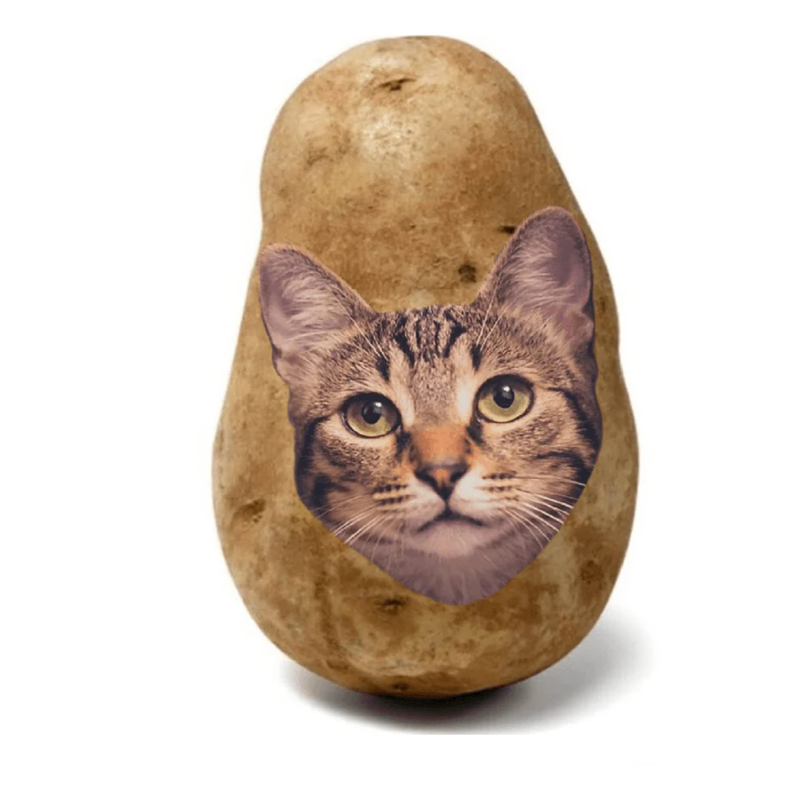

✿EL JARDÍN
DE LA LUNA
DE LA LUNA
El jardín de la luna
L. Mar · Demo
Fantasía
NekoPapataHistorias que se quedan contigoQUÉ GUSTO VERTE
Una carta olvidada, un tren sin destino y una ciudad que solo aparece al caer la noche.
Por A. Sol · Historia ficticia
DESCUBRE ALGO NUEVO
L. Mar · Demo
FantasíaN. Río · Demo
RomanceM. Nube · Demo
Vida cotidianaNo hay coincidencias en las historias demo.
Misterio · Historia ficticia
Aventura · Historia ficticia
Romance · Historia ficticia